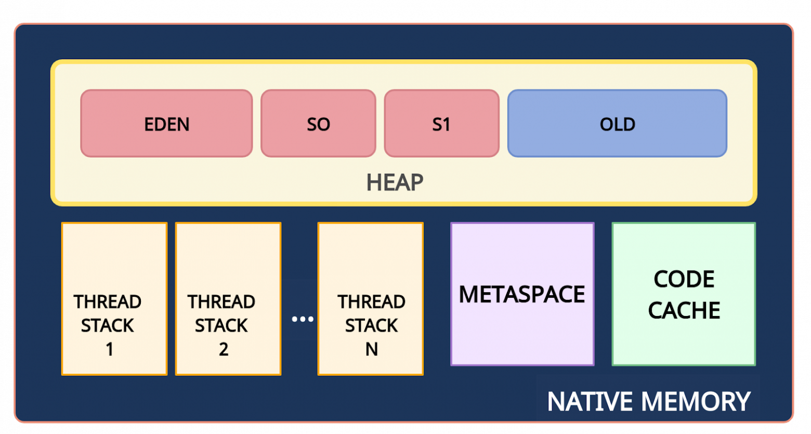
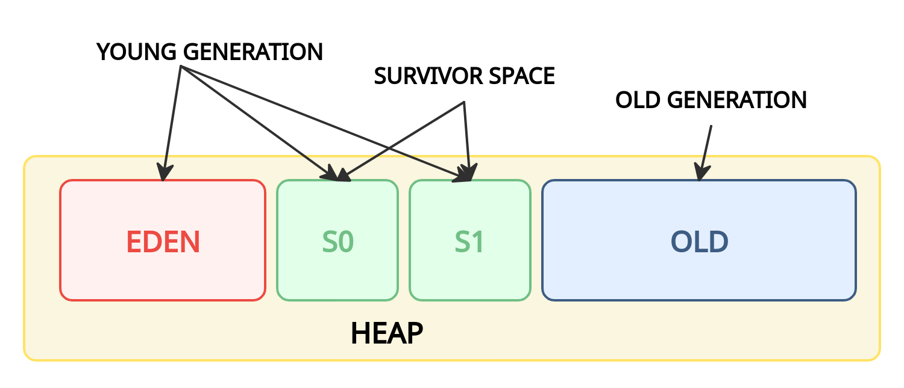

Память
Class Loader Subsystem
JVM загружает классы с помощью системы загрузчиков (Class Loaders), которая реализует модель делегирования:
- Поиск определения класса (файлы .class, JAR’ы, модули).
- Загрузку его в память.
- Проверку bytecode на валидность и безопасность.
- Определение класса в изолированном пространстве.
- Bootstrap ClassLoader – загружает стандартные классы из JDK (rt.jar или модули JDK).
- Extension ClassLoader – загружает библиотеки из ext директории.
- Application ClassLoader – загружает классы из classpath.
- Пользователь может создать Custom ClassLoader для динамической загрузки (например, в OSGi, плагинах).
Типы памяти
Вся область памяти называется Native Memory

PermGen(Permanent Generation) (deprecated)
С Java 8 ему на смену пришла область Metaspace.
Metaspace
Описание
- Является общими для всех.
- MaxMetaspaceSize - макс размер.
Здесь хранятся
- Структура класса
- bytecode методов
- Сигнатуры полей
- constant pool
- Информация о методах
CodeCache(кэш кода)
JIT - компилятор компилирует часто исполняемый код, преобразует его в нативный машинный код и кеширует
для более быстрого выполнения.
Heap(куча)

Heap
├── Young Generation - вновь созданные объекты.
│ ├── Eden Space - вновь созданные объекты.
│ └── Survivor Spaces (S0, S1) - те, кто “выжил” после первой сборки.
└── Old Generation (Tenured) - объекты, пережившие несколько сборок, считаются “долгоживущими”.
Описание
- Используется Java Runtime для выделения памяти и хранения объектов и JRE классов.
- Здесь работает Garbage Collector: освобождает память путем удаления объектов, на которые нет каких-либо
ссылок.
- Любой объект, созданный в куче, имеет глобальный доступ и на него могут ссылаться с любой части
приложения.
- Доступно для всех потоков.
- Для JVM мы можем задать начальный пул выделения памяти (Xms) и максимальный пул выделения памяти
(Xmx).
- Если куча переполнена получаем OutOfMemoryError.
Здесь хранятся
- При запуске программы сюда загружаются все классы среды выполнения
- Objects
- Object fields(включая примитивные)
- Static fields
- Pool String
Stack
Описание
Каждый поток, работающий в виртуальной машине Java, имеет свой собственный стек.
- Всякий раз, когда вызывается метод, в памяти стека создается новый блок, и после его завершения
удаляется вместе с переменными(LIFO).
- Размер стековой памяти намного меньше объема памяти в куче.
- Используется только одним потоком.
- Для JVM мы можем задать максимальный пул стековой памяти(Xss).
- Если память стека переполнена получаем StackOverflowError.
Здесь хранятся
- Stack вызова методов.
- Локальные(внутри методов) примитивы.
- Ссылки на локальные объекты(которые хранятся в heap).
Garbage Collector
Мусор - object в Heap на которого никто не ссылается.
Алгоритм работы GC: по фазам
- Mark - сканирует все объекты и помечает живые. Выполнение программы приостанавливается("Stop the World").
- Sweep - удаляются все немаркированные объекты.
- Compact(в некоторых GC) - оставшиеся объекты подвигаются друг к другу для удобства. Чтобы избежать фрагментации.
Типы сборок:
- Minor GC - запускается при заполнении Eden. Очищаются только молодые поколения. Быстро, но может происходить часто.
- Major GC/Full GC - включает Old Gen и Metaspace. Дорогая операция, может “заморозить” все потоки
(stop-the-world pause).
Алгоритм сборки мусора, использующий поколения
- Новые объекты создаются в EDEN.
- Когда область Eden заполняется, происходит минорная сборка мусора (Minor GC). Minor GC — mark и sweep
выполняются для young generation.
- Живые объекты перемещаются в одну из областей Survivor (например, S0).
- При следующем Minor GC процесс повторяется. Но объекты в областях S0 и S1 меняются метами, увеличивая
свой возраст.
- Объекты между областями Survivor копируются определенное количество раз (пока не переживут
определенное количество Minor GC) или пока там достаточно места. Затем эти объекты копируются
в область Old.
- Major GC - этапы mark и sweep выполняются для Old Generation. Major GC работает медленнее по сравнению
с Minor GC, поскольку старое поколение в основном состоит из живых объектов.
Как GC определяет, что объект мёртв?
GC не использует reference count. Он строит граф достижимости:
- Начинает с “корней” (GC roots)
- Если оттуда нельзя добраться до объекта — он считается мусором
- Это позволяет избежать утечек при циклических ссылках
Сборка мусора: флаги
- -XX:NewRatio=n - отношение размера Old Generation к Young Generation
- -XX:SurvivorRatio=n - отношение размера Eden к Survivor
- -XX:MaxTenuringThreshold=n - возраст объекта, когда объект перемещается из области Survivor в область
Old Generation
Включение логов GC
-XX:+PrintGCDateStamps -verbose:gc -XX:+PrintGCDetails -
Xloggc:/tmp/[Application-Name]-[Application-port]-%t-gc.log -
XX:+UseGCLogFileRotation -XX:NumberOfGCLogFiles=20 -
XX:GCLogFileSize=100M
Виды Garbage Collector(сборщик мусора)
- Serial GC - S GC
Один поток. Просто и медленно.
-XX:+UseSerialGC
- Parallel GC - P GC
Несколько потоков.
Многопоточность ускоряет сборку мусора.
Высокая пропускная способность.
-XX:+UseParallelGC
- CMS Garbage Collector - CMS GC
- G1 GC - G1 GC
Выполняет некоторую тяжелую работу параллельно с работой приложения.
-XX:+UseG1GC
- The Z GC - ZGC
Выполняет всю тяжелую работу параллельно с работой приложения.
В приоритете время отклика.
Работает с огромными кучами(до терабайта).
Низкая задержка.
-XX:+UseZGC
Немного примеров настройки GC
Настроить GC для веб-серверного приложения, где приоритетом является минимизация времени остановки для низкой задержки.
java -XX:+UseG1GC -Xms4G -Xmx4G -XX:MaxGCPauseMillis=200 -jar my-web-app.jar
- -XX:+UseG1GC: Использование G1 GC, который подходит для приложений с большим объемом памяти и требующих низких пауз GC.
- -Xms4G и -Xmx4G: Установка начального и максимального размера кучи в 4 ГБ.
- -XX:MaxGCPauseMillis=200: Целевое значение для максимальной длительности паузы GC в 200 мс.
Настроить GC для приложения обработки больших данных, где важна общая пропускная способность и эффективность использования памяти.
java -XX:+UseParallelGC -Xms8G -Xmx8G -XX:ParallelGCThreads=8 -jar my-data-processing-app.jar
- -XX:+UseParallelGC: Использование Parallel GC, который эффективен для многопоточных систем.
- -Xms8G и -Xmx8G: Установка начального и максимального размера кучи в 8 ГБ.
- -XX:ParallelGCThreads=8: Установка количества потоков для Parallel GC, оптимизировано для многопроцессорных систем.
Настроить GC для настольного приложения с пользовательским интерфейсом, требующего коротких пауз GC для обеспечения плавности работы.
java -XX:+UseConcMarkSweepGC -Xms512M -Xmx512M -jar my-desktop-app.jar
- -XX:+UseConcMarkSweepGC: Использование CMS GC, который минимизирует время остановки приложения.
- -Xms512M и -Xmx512M: Установка начального и максимального размера кучи в 512 МБ, достаточно для многих настольных приложений.
Настроить GC для сервера приложений, обрабатывающего высокие нагрузки и требующего большого объема памяти и высокой пропускной способности.
java -XX:+UseG1GC -Xms16G -Xmx16G -XX:ConcGCThreads=10 -jar my-high-load-server-app.jar
- -XX:+UseG1GC: Использование G1 GC, который подходит для серверных приложений с большим объемом памяти.
- -Xms16Gи-Xmx16G: Установка начального и максимального размера кучи в 16 ГБ.
- -XX:ConcGCThreads=10: Настройка количества потоков для параллельной сборки мусора.
Настроить GC для приложения с критически важными требованиями к низкой задержке.
java -XX:+UseZGC -Xms4G -Xmx4G -jar my-low-latency-app.jar
- -XX:+UseZGC: Использование Z Garbage Collector, который предназначен для систем с ультранизкими задержками.
- -Xms4G и -Xmx4G: Установка начального и максимального размера кучи в 4 ГБ для управления большими объемами данных с минимальными паузами.
Советы по оптимизации
- Избегайте долгоживущих ссылок (static, ThreadLocal) без необходимости.
- Используйте WeakReference, если хотите избежать удержания объекта GC.
- Кэшируйте объекты осознанно — утечка через Map может быть незаметной.
- Задавайте лимиты памяти (-Xms512m -Xmx1024m).
Garbage Collector by default.
- Java 7 - Parallel GC
- Java 8 - Parallel GC
- Java 9 - G1 GC
- Java 10 - G1 GC
- Java 11 - Z GC
Memory leak
Memory leak - объект уже не нужен, но GC не может его удалить, потому что на него осталась ссылка. То есть
память логически свободна, но технически занята.
- static живёт всё время жизни JVM.
- Слушатели/callbacks/observers
- Кеш без ограничений. ИспользуЙ:Caffeine, Guava, Cache Redis.
Как найти memory leak
- Heap dump - jmap -dump:live,format=b,file=heap.hprof
- Анализ dump’а - VisualVM, Eclipse MAT, JProfiler.
- Быстрый чек через jcmd
Вопросы
System.gc() - метод для выполнения сбора мусора. Но JVM сама решить запускать или нет.
finalize() - вызывается перед удалением объекта. С Java 9 не рекомендуем к использованию.
Happens-Before
Happens-before - правило из Java Memory Model(JMM), которое определяет, когда изменения одного потока
гарантированно видны другому потоку.
Если действие A happens-before B, то: A выполнится раньше B. Все изменения памяти, сделанные в A, будут видны в B.
Happens-before = гарантия видимости + гарантия порядка.
Основные правила happens-before
- Правило порядка в одном потоке - внутри одного потока код выполняется последовательно.
- Правило synchronized
- Правило volatile - гарантирует: видимость и запрет переупорядочивания вокруг этой переменной.
- Правило Thread.start() - что происходит до вызова start(), happens-before коду внутри нового потока.
- Правило Thread.join()
- Правило для concurrent-коллекций - обеспечивают необходимые happens-before гарантии при своих операциях.
Типы ссылок в java
Strong Reference(сильная ссылка)
- Это обычные ссылки, которые мы используем каждый день.
- Пока на объект существует(хотя бы одна сильная ссылка) и не заменен на null - он не подлежит сборке мусора.
- Чтобы объект мог быть собран, все сильные ссылки на него должны быть обнулены.
Object obj = new Object();
Soft Reference(мягкая ссылка)
- Объект удаляется только при нехватке памяти.
- Используется в кешах, чтобы не загружать память, но сохранить объект, если он ещё полезен.
- Можно получить объект через ref.get(), но если GC уже удалил его — вернётся null.
SoftReference<Object> ref = new SoftReference<>(new Object());
Weak Reference(слабая ссылка)
- Объект может быть собран немедленно, даже если только слабые ссылки на него остались.
- Используется для реализации структур с автоудалением(например, WeakHashMap).
- Часто применяется, когда объект должен быть доступен «до тех пор, пока он кому-то нужен».
WeakReference<Object> ref = new WeakReference<>(new Object());
Phantom Reference(фантомная ссылка)
- Объект уже помечен как удаляемый, но ещё не собран GC.
- Метод get() всегда возвращает null.
- Используется для контроля финализации и освобождения ресурсов вне heap(например, off-heap, native).
- Требует ReferenceQueue, через которую можно узнать, что объект вот-вот будет удалён.
PhantomReference<Object> ref = new PhantomReference<>(new Object(), referenceQueue);